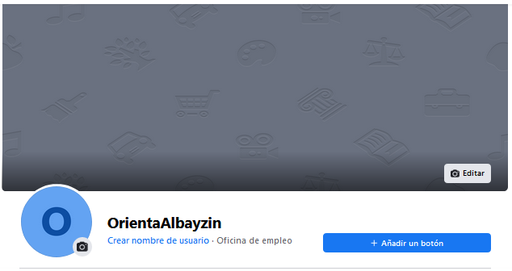
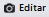
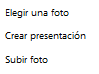
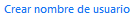
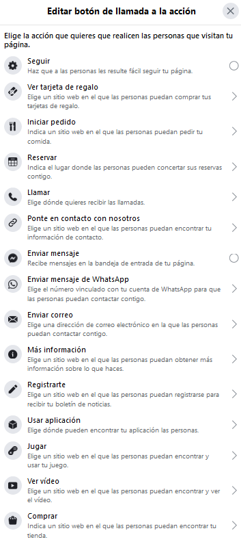

B. Cabecera
La cabecera de nuestra página es la zona donde podemos colocar una imagen que nos identifique, una fotografía y una pequeña descripción. Asimismo podemos añadir un botón a nuestra página web para que realice una acción, como por ejemplo, un botón de contacto mediante correo electrónico, poner un botón de seguir, de enviar un mensaje bajo whatsapp, etc.

Veamos las opciones
Imagen de cabecera
Para colocar o cambiar una imagen de cabecera, tan sólo debemos pulsar en  y nos aparece un menú de opciones como el siguiente:

Tan sólo elegir la opción deseada. En el caso de elegir una foto de las que ya hemos subido a Facebook, En el caso crear una presentación, nos permite elegir diferentes fotos y el sistema va pasando de una a otra. En el caso de subir una foto podremos elegir una foto de nuestro ordenador y subirla. Después de colocar la fotografía el sistema nos permite ajustarla para que la podamos ver como deseamos.
Fotografía o logo
Podemos también cambiar nuestra fotografía o logo, pulsando en la cámara que encontramos en el icono  . Al pulsarla, nos permite subir a Facebook una imagen de nuestro ordenador o elegir una de las que tenemos.
. Al pulsarla, nos permite subir a Facebook una imagen de nuestro ordenador o elegir una de las que tenemos.
La diferencia entre la imagen de cabecera y la fotografía es que normalmente la iamgend e cabecera corresponde a una imagen descriptiva del trabajo que realizamos, hobbies, etc., mientras que la fotografía es un logo o algo que identifica nuestra marca personal.
Nombre de usuario
La opción  nos permite cambiar el nombre del usuario que pusimos al principio y corresponde también al nombre de nuestra página Facebook.
Añadir/Cambiar un botón de acción
Por último, la opción nos permite añadir un botón en la cabecera que establezca una acción al pulsarlo. Sólo es posible colocar un botón, y deberemos elegir entra las acciones disponibles, que son:

Cada acción requerirá establecer ciertos parámetros. Por ejemplo, enviar correo requerirá dar un correo electrónico, llamar requerirá establecer un teléfono, enviar mensaje por Whatsapp requerirá establecer un teléfono vinculado con Whatsapp, etc.